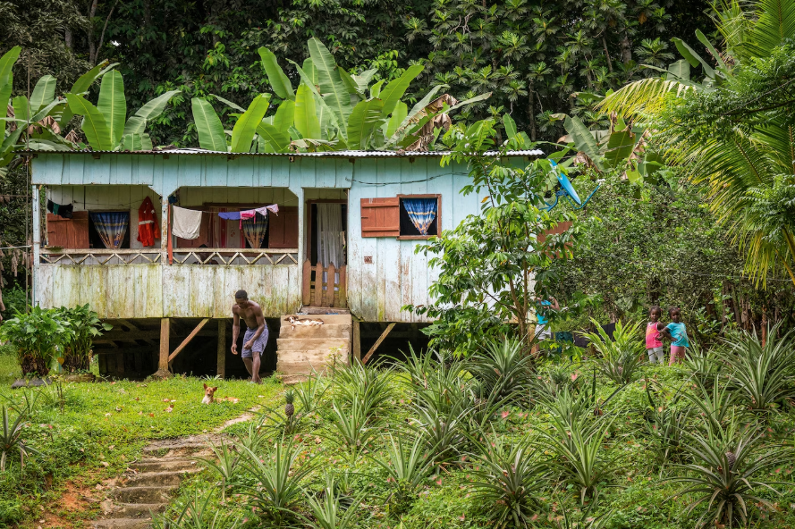
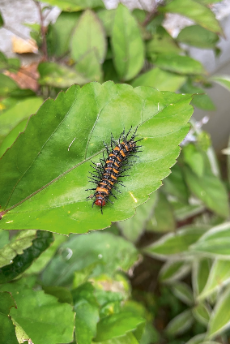
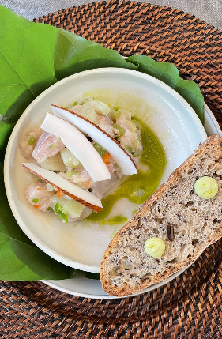
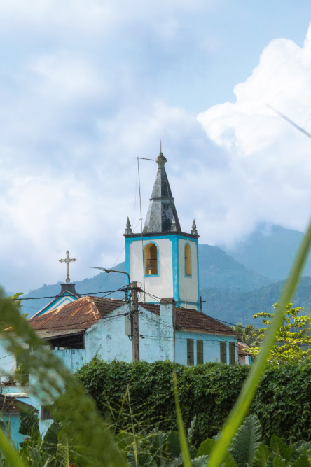
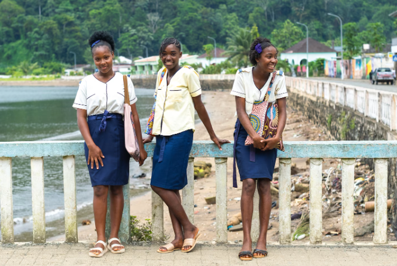
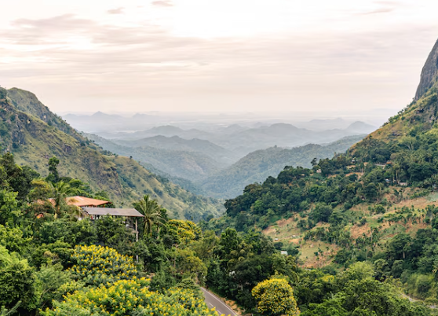

Located off Africa’s western shore, Príncipe is a quiet paradise — where ancient jungle spills into the sea, endemic species thrive and nature writes its own secret epic.
By Charlotte Wigram-Evans
Published March 2, 2026
So busy am I admiring their delicate spotted backs that, when the sunlight suddenly disappears and I find myself surrounded by a swirling mass of inky darkness, I think I’ve somehow fallen from sea to space and am witnessing a display of shooting stars. The sardine ball shifts and dances, parting to my touch, but closing immediately behind me, locking me in a magical underwater world. By the time I come up for air, the weather has turned. Fast, fat droplets pound the water, thunder rumbles in the distance and mist descends on the jungle, wrapping the spires of the peaks in a ghostly veil.
Designated a biosphere reserve in 2012, the entire island is inscribed by Unesco, while more than half is a national park — an emerald expanse home to creatures found nowhere else on Earth. “Lapa,” Batista gestures to a clutch of wooden dwellings huddled around a small beach, as our speedboat heads home. “Ten families live there and it’s the only village in the park. It’s takes more than four hours to walk here from town, so it’s a bad day when you forget something on your shopping list.”

“Everyone knows someone who works for HBD: a friend, an aunt, a cousin,” Batista says, helping me down from the boat, our feet sinking into sand as soft as butter as we splash our way to shore. “We’re lucky — 10 years ago, the economy was struggling. There were no jobs, and my friends were all leaving the island. Now, we all want to stay. And why wouldn’t we? It’s the most beautiful place on Earth.”


Her project, which was pioneered in Costa Rica, pays both travellers and locals to plant trees that add to the island’s biodiversity. Emma also works to ensure that as many guest dollars as possible are ploughed back into education and conservation, while also driving through initiatives to cut waste and recycle; rubbish pick-ups have become a weekly social gathering in Príncipe’s toy-town capital, Santo Antonio. And when I meet my second guide, I see how love also plays a large part in the population’s resolve to protect its greatest asset.
The forest and the future
We take the Oquê Pipi Waterfall Trail. Steam rises from leaves as big as elephant ears, coral trees rain down petals the colour of a freshly stoked fire and birds sing us a morning symphony as Jackson reads me the story written in the jungle.
“This little guy will become one of Príncipe’s most beautiful butterflies, the endemic acraea species,” he says, pointing to a caterpillar that has something of the punk rocker about it, thanks to a bristling mohawk of black hair running the length of its back. “If you happen to pay for something with a 10 dobra note, there will be a picture of this butterfly on it. In fact, all our money has wildlife printed on it.”

Emma meets me in Santo Antonio, pulling over in her 4WD and gesturing for me to climb in. The capital thrums with life. Chickens run amok among kids on their way to school and the lilting voices of women outside open-fronted fabric shops carry on the air, humid and already thick with heat.

We turn our ears towards the trees and, with the help of Martim, slowly unstitch the soundscape: there’s the metallic, tinny twang of the Príncipe sunbird, the raucous chatter of the golden weaver and the mellifluous cooing of the São Tomé green pigeon. The creatures could make a birdwatcher of the most avian-averse traveller, and I find myself as fascinated as the schoolgirls who make notes, ask questions and diligently direct their binoculars wherever Martim instructs them to.
In fact, I’m so entranced by a Príncipe starling’s shimmering, purple plumage that when one of the group’s youngest participants taps me shyly on the shoulder, it takes me a moment to pull my gaze away. Jani is wide-eyed and beautiful, with a smile that would melt hearts and a bright pink outfit that rivals the island’s most colourful birds. She shows me her notes on the starling, page after page written in immaculate handwriting and explains that she’s going to become an ornithologist.
How to do it
- Far & Wild Travel offers a nine-night trip, with three nights each at Bom Bom and Sundy Praia on Príncipe, and three nights at Omali Lodge in São Tomé, from £4,596 per person. The price includes half-board accommodation and daily activities. International and internal flights are also included.
- How to get there
Reaching Príncipe takes time, but the journey is part of the adventure. Fly first to Lisbon, then continue to São Tomé with TAP Air Portugal. From São Tomé, the final leg to Príncipe is operated by STP Airways or Africa’s Connection STP, a short hop that swaps city noise for birdsong. - When to go
Príncipe sits on the Equator, with warm temperatures year-round. The dry seasons — December to February and June to September — offer the clearest skies for hiking and exploring, while the shoulder months bring dramatic rainforest downpours and fewer visitors.
You May Also Like

See Sri Lanka’s misty tea country — in pictures